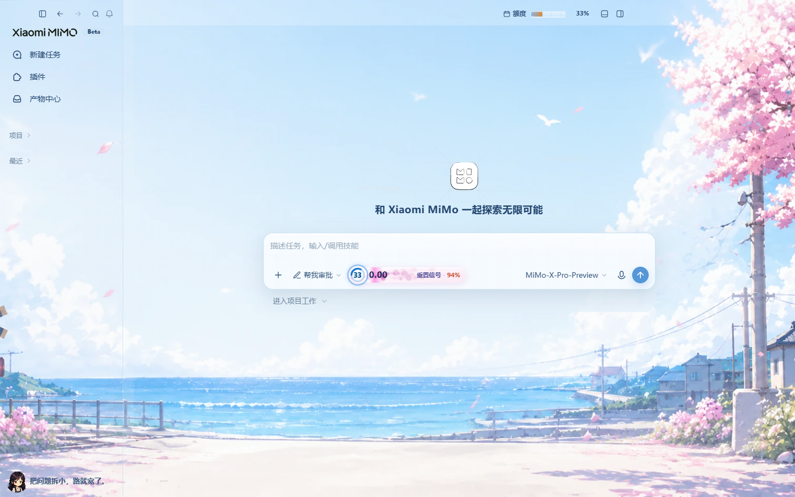
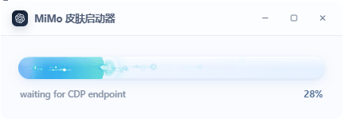

01
语义色 → MiMo tokenSemantic colors → tokens
10 个主题色合成约 70 个 --color-* 变量，浅色侧栏、主区、输入框自动跟色。 10 theme colors compose into ~70 --color-* tokens so sidebar, main, and composer stay coherent.
不改安装目录、不碰 app.asar。克隆仓库，一条快捷方式启动，主题 CSS 通过 127.0.0.1 注入。 No install-dir edits, no app.asar changes. Clone once, launch from a shortcut, inject CSS over loopback.

新建任务视图 · 项目已收起 · 樱花海岸主题已注入。 New-task view · projects collapsed · Sakura Coast injected.
桌面启动器读取工作进程输出的 PROGRESS n stage 推进进度，不是时间假动画。注入校验通过后才到 100%。
The desktop launcher reads real PROGRESS n stage lines from the worker — not a timed fake. 100% only after a successful inject.

只覆盖设计 token 与少量运行时节点，尽量少碰业务 DOM。 Overrides design tokens and a few runtime nodes — minimal DOM surgery.
10 个主题色合成约 70 个 --color-* 变量，浅色侧栏、主区、输入框自动跟色。 10 theme colors compose into ~70 --color-* tokens so sidebar, main, and composer stay coherent.
插画铺在窗口级，面板半透明 + 轻磨砂，保证插画可见、正文可读。 Artwork paints at window level; panels use light translucency so art shows without killing legibility.
输入区显示剩余额度环、今日本地工时累计，以及公开 X 动态信号。 Composer shows remaining quota, local work-clock total, and public X reset signals.
桌面启动器动画窗口：预估进度封顶 94%，注入成功到 100% 再关闭。 Desktop launcher window estimates up to 94%, then 100% after a successful inject.
只读取 x.com 公开时间线并本地分类，不是官方通知，失败不影响换肤。 Reads public x.com posts only, classifies locally. Not official. Failures never block theming.
Windows 10+ · 已装 Xiaomi MiMo · Node.js 22+ 在 PATH 中。 Windows 10+ · Xiaomi MiMo installed · Node.js 22+ on PATH.
无 npm 依赖，克隆即可用。 No npm dependencies.
创建桌面「MiMo 皮肤」入口，图标使用小米 MiMo 应用图标。 Creates a desktop shortcut using the Xiaomi MiMo app icon.
用快捷方式启动（父进程是 explorer.exe）。MiMo 已在托盘时先完全退出。 Launch from the shortcut (parent is explorer.exe). Fully quit tray MiMo first if it is running.
还原官方外观：Restore stock UI:
powershell -NoProfile -ExecutionPolicy RemoteSigned -File .\Start-MiMo.ps1 -Revert
仓库与运行时都按「最小权限」设计。 Repo and runtime are designed with least privilege.
Start-MiMo.ps1 # 根入口 / root entry Start-Codex.ps1 # 启动器宿主（进度条 UI）/ launcher host mimo/Start-MiMo-Skin.ps1 # 定位 exe、快捷方式、CDP mimo/scripts/inject-skin.mjs # CDP 注入 + 运行时 mimo/scripts/theme-css.mjs # 语义色 → token mimo/scripts/tibo-radar.mjs # 公开 X 动态 mimo/assets/themes/ # 主题 JSON mimo/assets/*.webp # 插画与头像 windows/launcher/ # WebView2 启动器（可选 SDK） docs/images/ # 站点与 README 图 site/ # 本产品站